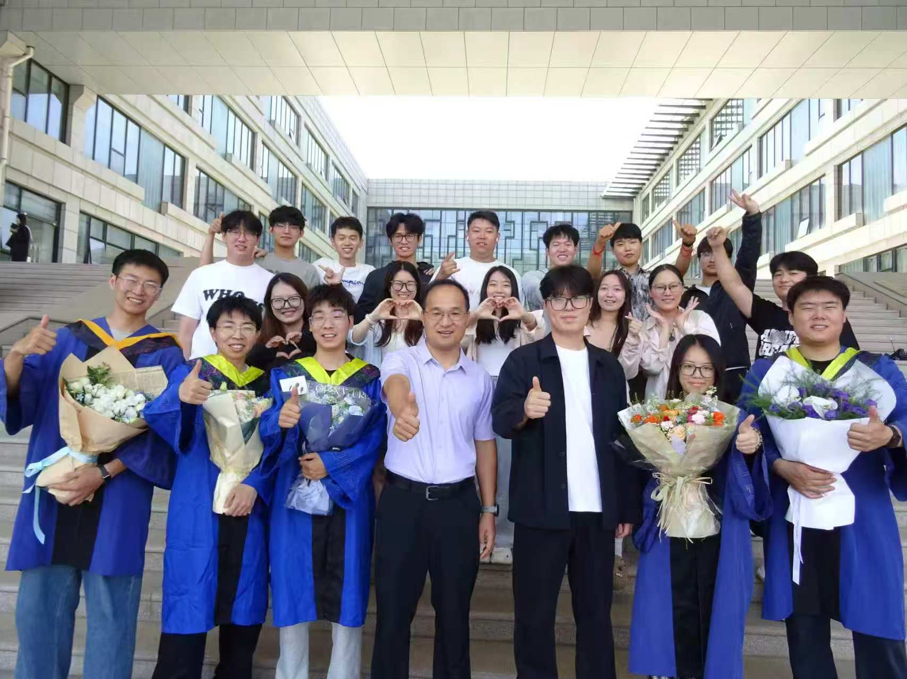

P / 01
National Natural Science Foundation of China
UAV Multimodal Enhancement, Understanding, and Resilient Navigation for Urban Flood Rescue
2026.01 — 2029.12
Published more than 60 research papers.
TGRS 2026 IEEE Transactions on Geoscience and Remote Sensing
TII 2026 IEEE Transactions on Industrial Informatics
TCSVT 2026 IEEE Transactions on Circuits and Systems for Video Technology
TGRS 2026 IEEE Transactions on Geoscience and Remote Sensing
IOTJ 2026 IEEE Internet of Things Journal
TCE 2026 IEEE Transactions on Consumer Electronics
TIM 2026 IEEE Transactions on Instrumentation and Measurement
TGCN 2026 IEEE Transactions on Green Communications and Networking
TIM 2025 IEEE Transactions on Instrumentation and Measurement
TGRS 2025 IEEE Transactions on Geoscience and Remote Sensing
TVT 2022 IEEE Transactions on Vehicular Technology
02 / SUPPORT
6 research projects · 2023 — 2029
National Natural Science Foundation of China
2026.01 — 2029.12
National Natural Science Foundation of China
2023.01 — 2025.12
Henan Provincial Key Science Fund Project
2026.01 — 2028.12
Henan Provincial Program for Science and Technology Innovation Talents in Universities
2026.01 — 2028.12
Aeronautical Science Foundation
2023.10 — 2025.10
China Postdoctoral Science Foundation General Program
2023.09 — 2025.08
